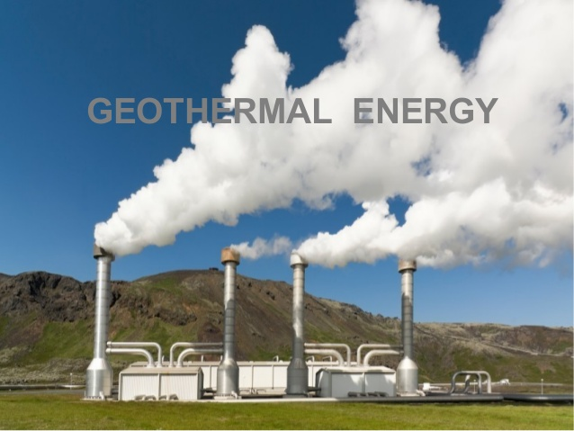

Sources of Energy
Solar power is the conversion of energy from sunlight into electricity, either directly using photovoltaics, indirectly using concentrated solar power, or a combination. Concentrated solar power systems use lenses or mirrors and tracking systems to focus a large area of sunlight into a small beam. Nuclear power is the use of nuclear reactions that release nuclear energy to generate heat, which most frequently is then used in steam turbines to produce electricity in a nuclear power plant. Nuclear power can be obtained from nuclear fission, nuclear decay and nuclear fusion reactions. 
Hydropower or hydroelectricity refers to the conversion of energy from flowing water into electricity. It is considered a renewable energy source because the water cycle is constantly renewed by the sun. Historically, one of the first uses of hydro power was for mechanical milling, such as grinding grains. Today, modern hydro plants produce electricity using turbines and generators, where mechanical energy is created when moving water spins rotors on a turbine. This turbine is connected to an electromagnetic generator, which produce electricity when the turbine spins.  Wave energy (or wave power) is the transport and capture of energy by ocean surface waves. The energy captured is then used for all different kinds of useful work, including electricity generation, water desalination, and pumping of water. Biofuels are fuels produced directly or indirectly from organic material – biomass – including plant materials and animal waste. 
Natural gas (also called fossil gas) is a naturally occurring hydrocarbon gas mixture consisting primarily of methane, but commonly including varying amounts of other higher alkanes, and sometimes a small percentage of carbon dioxide, nitrogen, hydrogen sulfide, or helium. Geothermal power stations are similar to other steam turbine thermal power stations in that heat from a fuel source (in geothermal's case, the Earth's core) is used to heat water or another working fluid. The working fluid is then used to turn a turbine of a generator, thereby producing electricity. Wind energy is a form of solar energy. Wind energy (or wind power) describes the process by which wind is used to generate electricity. Wind turbines convert the kinetic energy in the wind into mechanical power. A generator can convert mechanical power into electricity. 
Biomass is organic material that comes from plants and animals, and it is a renewable source of energy. Biomass contains stored energy from the sun. Plants absorb the sun's energy in a process called photosynthesis. When biomass is burned, the chemical energy in biomass is released as heat. Tidal power or tidal energy is the form of hydropower that converts the energy obtained from tides into useful forms of power, mainly electricity. Although not yet widely used, tidal energy has potential for future electricity generation. Tides are more predictable than the wind and the sun. 
Hydrogen is a clean fuel that, when consumed in a fuel cell, produces only water. Hydrogen can be produced from a variety of domestic resources, such as natural gas, nuclear power, biomass, and renewable power like solar and wind. 
|